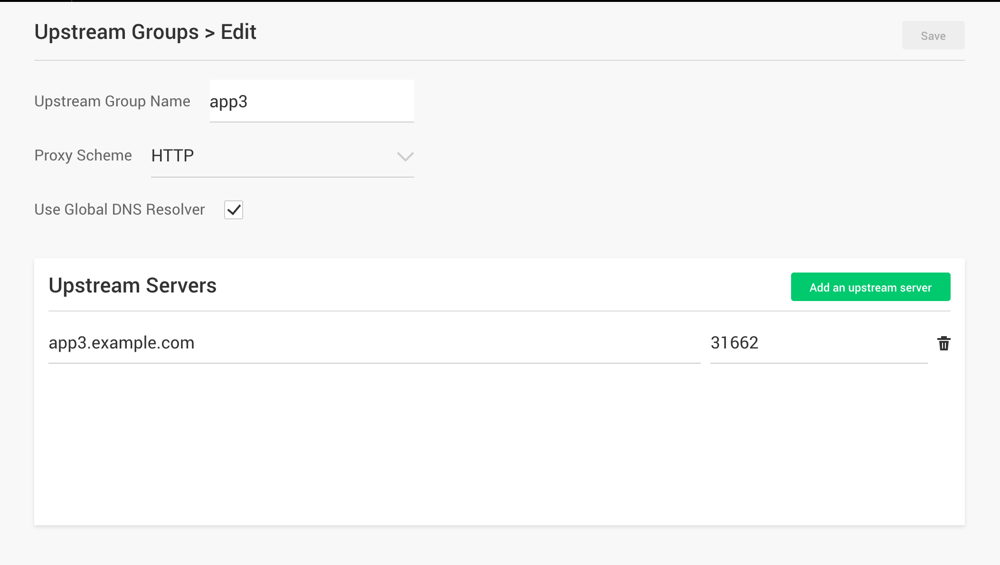

Lab 2.1 - Reviewing Nginx Configuration and deploy TLS Policy¶
Reviewing Nginx base configuration
- Access Nginx Controller GUI
Note
login as admin-nginx@arcadia-finance.io and password is admin123!
{kind=link}
Click “API Managment”, and then click “Upstream Group”
{kind=link}
The Upstream Groups are pre-configured as above
Click on one of them and review the configuation. You can notice the internal FQDN (resolved by the internal DNS BIND - next step) and the KubeProxy port.

{kind=link}
Go back to Upstream Groups and Click “Global Resolver” to verify DNS configuration on Nginx. The IP 172.17.0.1 is a BIND running in docker. It resolves internal FQDN used by Upstream Groups on an admin defined period instead of on load as it did in the past.
{kind=link}
Test Nginx TLS Policy Configuration
1. Test TLS 1.0. RDP to Windows JumpHost and start a command line. Access Nginx API instance directly with a curl command (bypassing the BIGIP), it should be successful.
curl -kI --tlsv1.0 --tls-max 1.0 https://apinginx.arcadia-finance.io:8443/trading/transactions.php --verbose
{kind=link}
Warning
If you try running the curl command from the linux CLI in the controller, it is expected to fail, as the tls-max option is not there. Run the curl command from the WINDOWS JumpHost as requested.
2. Go back to Controller GUI and create a new TLS policy. Click “Entry Points”, click on “TLS / SSL Policies” on the top menu and then click “Create a Policy”. Put TLS_1.2_Only in “TLS/SSL Policy Name”, only check TLS 1.2 for “TLS Protocols”, leave rest as default and click “Create”
{kind=link}
3. Assign this TLS policy to an Entry Point. Click on “Entry Points”, click edit icon for “Arcadia API”, click Drop down icon in “TLS/SSL Policy”, select TLS_1.2_Only, and click “Save” button
{kind=link}
4. Verify TLS policy configuration. Click “Entry Point”, and then click “TLS/SSL Policies”, you should see screen as below. The TLS_1.2_Only policy is used by the “Arcadia API” Entry Point
{kind=link}
5. Publish the API Definitions. Click “API Definitions”. You can notice a warning “Edited since last publish”, telling you a publish is needed. Click edit icon for “prod API” environment. Scroll down and click the green button “Publish” and wait for “publishing” to complete.
{kind=link}
6. Test TLS 1.0 again, access Nginx API instance directly with command below, it should fail
curl -kI --tlsv1.0 --tls-max 1.0 https://apinginx.arcadia-finance.io:8443/trading/transactions.php --verbose
{kind=link}
7. Test TLS 1.2, access Nginx API inststance directly with command below, it should be successful
curl -kI --tlsv1.2 --tls-max 1.2 https://apinginx.arcadia-finance.io:8443/trading/transactions.php --verbose
{kind=link}
Note
In this lab you set a new TLS policy on the NGINX+ instance in order to allow only TLS1.2. Even though these NGINX+ instances are protected by a BIGIP, in some architecture, NGINX+ instance can be deployed without a BIGIP (Public Cloud …)